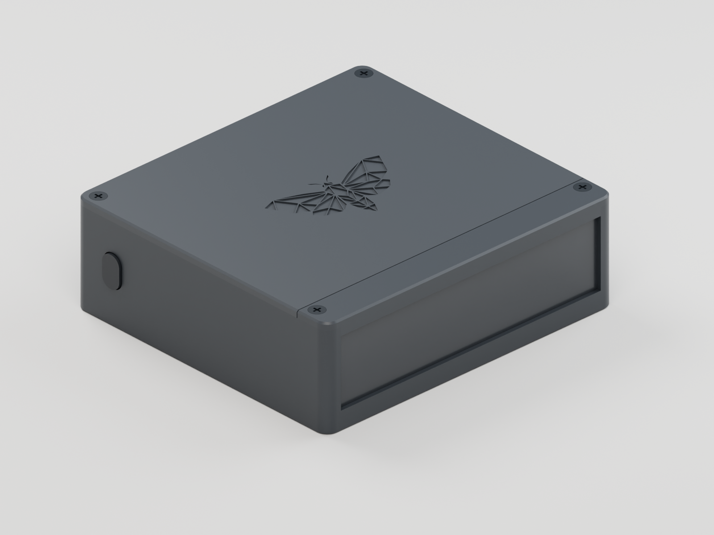
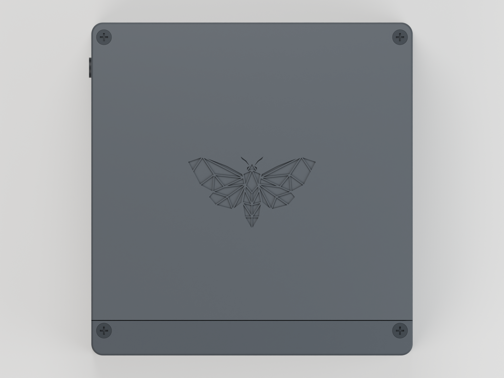
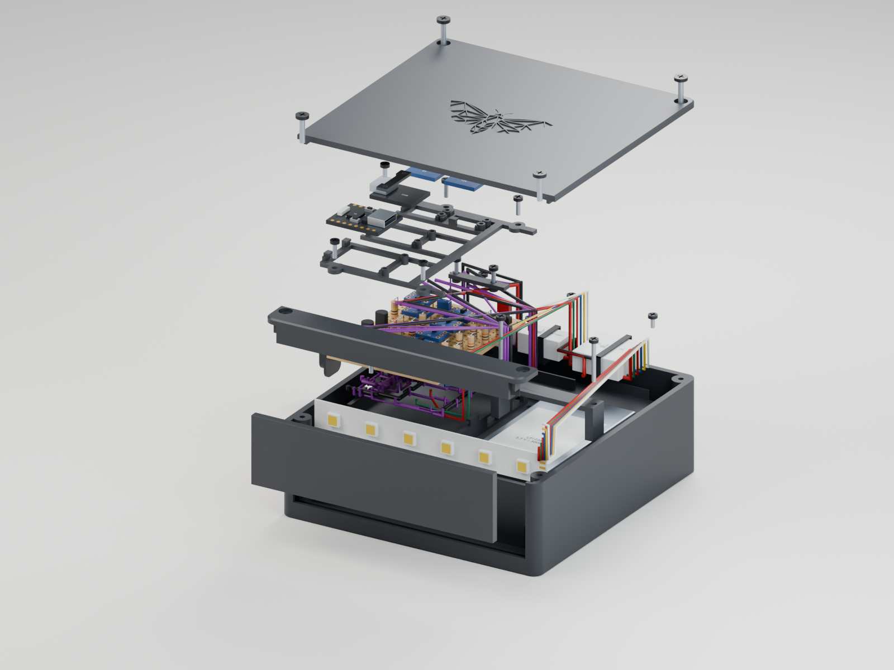
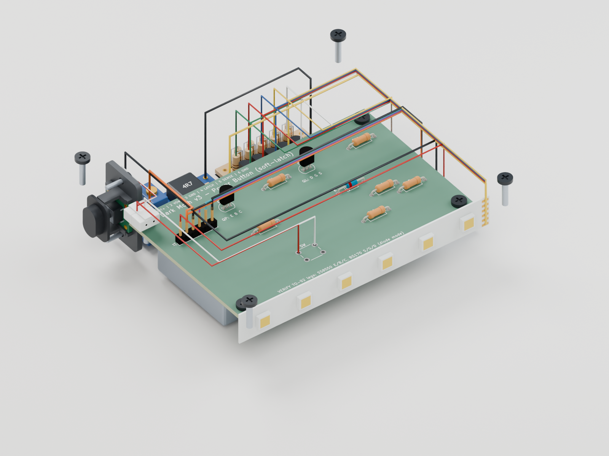
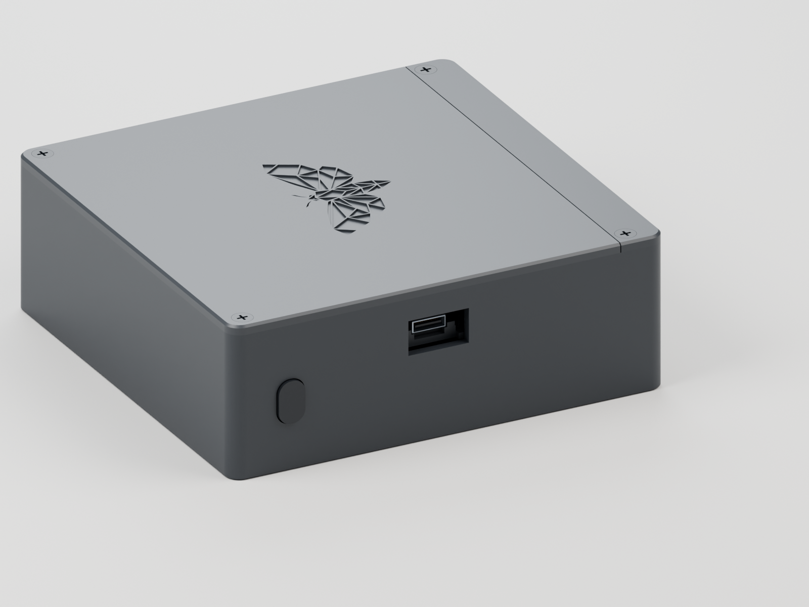

A button where your thumb rests.
The left-side key presses a small tact switch in a captive carrier. A keyed two-pin pigtail lets you unplug the button from the main board.
The original moth. A wired button on the side. A replaceable smoked face. Explore the complete prototype, down to the board, screws and wiring.
R5 for the v3-button 12 V hand-build.
Digitally checked. First physical print pending.

The case, populated PCB, modules, screws and harness in one model. Select a part to read its reference, or open the board guide for exact assembly steps.
Loading the complete prototype…
Drag to rotate. Scroll to zoom.All specified prototype assemblies are represented. The PCB comes from KiCad; modules, connector bodies and wire routes use labelled nominal geometry. The unpopulated PCB switch is not part of the build. Using blank green boards? Open the 3D perfboard guide →
The moth stays unmistakable. The details around it make the case easier to use and service.
The left-side key presses a small tact switch in a captive carrier. A keyed two-pin pigtail lets you unplug the button from the main board.
Remove two front screws and lift the rail. The acrylic slides straight up; the electronics lid stays closed. No tape or glue holds the sheet.
The authentic 44-facet artwork returns as a 44 mm-wide, 0.5 mm-deep engraving. The fit coupon carries the same detail for a first-print check.




The body and button need supports. Check the setup and print the matching moth coupon first.
Open the print setup guideDownload the updated fit coupon
104 × 28 × 3 mm
Stock dimensions are unconfirmed. The earlier 94.8 mm-wide dark sheet is too narrow for this case. Measure your material before cutting.
The supplied files accept 3 mm smoked acrylic in a 3.4 mm channel. Use a deburred corner or small offcut in the coupon’s 3.2, 3.4 and 3.6 mm test slots.
The updated coupon prints moth-down, just like the lid, with its slot banks up. Turn it over to check the fine facets and surface finish. Use the same plate, material and profile for the lid.
Start with black PETG, a 0.4 mm nozzle, 0.2 mm layers, four walls and 20% infill. The files already have their intended bed orientation.
Body and button: enable normal automatic supports, turn “On build plate only” off, and turn “Don’t support bridges” off. Check actual supports in Preview. Fix the floating-cantilever warning →
For blank green boards, use the interactive perfboard guide: every leg, hole and underside wire. The etched PCB guide covers the original case-mounted board. The new perfboard reference needs a physical fit check and one qualified prototype before batch building.
Open the case assembly guideMillimetres throughout. Editable source, portable models, real previews and the assembly instructions.
The portable 3MF files do not enable supports. Select your printer and filament, then follow the per-part print setup. The body and button require supports; keep the moth coupon face-down.
Bambu projects with supports saved: Body · P1S / PETG · Button · P1S / PETG. Reference: 0.4 mm nozzle, Textured PEI. Open as projects, select your actual printer and re-slice.
The diffuser template describes purchased acrylic. Opaque black PETG would block the light. The complete pack includes all source dependencies.
Digital checks support a careful first build. Physical fit, button feel, light quality and thermal behaviour remain to be tested with the actual components.
{kind=link}
{kind=link}
{kind=link}
{kind=link}